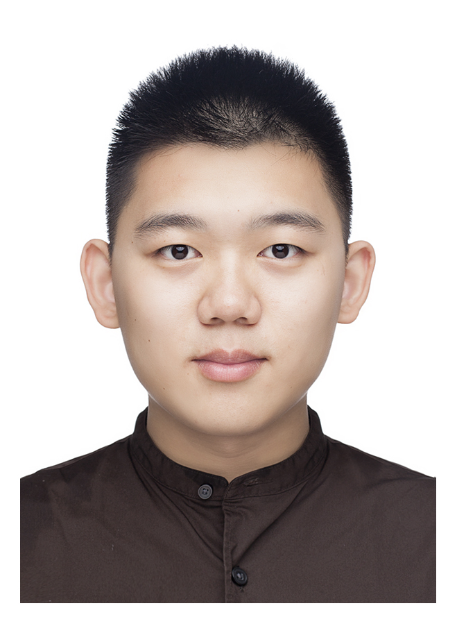

Jingwei Guo (郭经纬)Ph.D. Candidate,Department of Electrical Engineering and Electronics, University of Liverpool. Email: Jingwei.Guo@liverpool.ac.uk CV • Google Scholar • GitHub • Twitter |
 |
About
I am currently a fourth year PhD student in Department of Electrical Engineering and Electronics, University of Liverpool, under the supervision of Prof. Kaizhu Huang and Prof. Xinping Yi. I received my B.S. degree from Xi’an Jiaotong-Liverpool University in 2018.My research interests focus on, but are not limited to, graph machine learning. Recently, I have been developing theories and algorithms to enhance Graph Neural Networks (GNNs). These enhancements are specifically aimed at combating oversmoothing, handling graph heterophily, capturing long-range dependencies, and detecting anomalies. Feel free to contact me if you are seeking any form of collaboration.
Publications
Preprint
Rethinking Spectral Graph Neural Networks with Spatially Adaptive Filtering
Jingwei Guo, Kaizhu Huang, Xinping Yi, Zixian Su, Rui Zhang.
Under review, 2023.
[paper]
[codes]
Jingwei Guo, Kaizhu Huang, Xinping Yi, Zixian Su, Rui Zhang.
Under review, 2023.
Unraveling Batch Normalization for Realistic Test-Time Adaptation
Zixian Su, Jingwei Guo, Kai Yao, Xi Yang, Qiufeng Wang, Kaizhu Huang.
Under review, 2024.
[paper]
[codes]
Zixian Su, Jingwei Guo, Kai Yao, Xi Yang, Qiufeng Wang, Kaizhu Huang.
Under review, 2024.
Teaching Assistant
- CPT206: Computer Programming for Financial MathematicsSpring 2023
- CPT403: Object Oriented ProgrammingAutumn 2022
- NT104: Artificial IntelligenceSpring 2021
- NT202: Complexity of Algorithms IntroductionSpring 2021
- CPT105: Introduction to Programming in JavaAutumn 2020
Research Assistant
- Sano Medical Laboratories, Inc. - XJTLUSep. 2018 - Feb. 2019
- Summer Undergraduate Research Fellowship - XJTLUSummer 2016 & 2017
Academia Services
- Journal reviewers: TNNLS, Neural Networks, Neurocomputing, Cognitive Computation